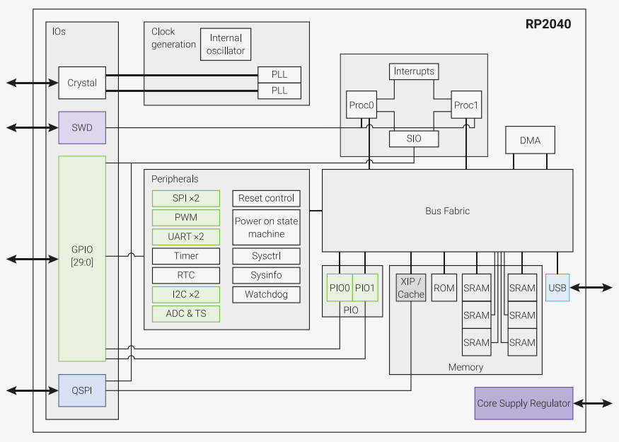

RP2040¶
Raspberry Pi :
Cortex-M0Dual Core133MHzUSB OTGQFN56$0.7MicroPython
Xin简介¶
规格参数¶
基本参数¶
特征参数¶
芯片架构¶
功耗参数¶
电压范围：1.71 to 3.6 V
功耗范围：

时钟架构¶

PIO模块¶
RP2040中有2个相同的PIO块,每个PIO块都有专用的连接到总线结构,GPIO和中断控制器,每个块有四个状态机,可以独立执行顺序程序来操作GPIO和传输数据。
与通用处理器不同的是,PIO状态机对IO的专业化程度很高(highly specialised),它注重确定性,精确的时序,并与固定功能硬件紧密结合。PIO状态机可以动态地配置和重新配置,以实现许多不同的接口,自由度很高。
PIO可以支持多种IO标准包括:
8080/6080 并行接口
I2C
I2S
SDIO
SPI/DSPI/QSPI
UART
DPI/VGA (利用电阻网络)

Note
PIO状态机是与GPIO完全不同的实现，在芯片接口上开放了更高的自由度，在一定程度上实现了软件定义硬件。
Xin选择¶
Note
RP2040从性价比和生态资源上都具有后发优势，继STM32F103C8、ESP8266之后成为开源硬件项目的基准平台。
MicroPython
Cortex Dual Core
PIO状态机
USB 1.1 OTG UF2
$0.7
Hint
ADC配置过弱，和STM32新产品相比无法凸显出作为MCU定位的核心价值；和STM32产品相比，定位低端性能过剩，定位高端则接口过少，缺少成熟商用化工具和IDE支持；
品牌对比¶
就双核MCU配置而言，市场比较罕见，ST双核都是定位较高端的，ESP32双核SoC侧重通信连接是一个强力的对手。
系列对比¶
RP2040目前没有更多系列
版本对比¶
RP2040 包含两个子系列，分别为支持无晶振USB FS device的RP2040xxU系列，不支持USB的 RP2040xxN(1.8V-3.6V)/RP2040x4NR(1.8V-5.5V)。预期在Arduino和Micropython生态资源上拥有无与伦比的优势。
Xin应用¶
开发板¶
Pico W¶
CYW43439 $6
开发框架¶
C++¶
Arduino¶
MicroPython¶
应用方案¶
TensorFlow Lite Micro¶
TensorFlow
pico-debug¶
CMSIS-DAP
pico-debug runs on one core in a RP2040 and provides a USB CMSIS-DAP interface to debug the other core
项目案例¶
logic-analyzer¶
grblHAL¶
VGA¶

Xin总结¶
能力构建¶
RP2040 提供所有常用接口：硬件 UART、SPI 和 I2C 控制器、USB 1.1 和四通道 ADC。而可编程 I/O (PIO) 子系统使 RP2040 脱颖而出，支持包括 SDIO、DPI、I2S，甚至 DVI-D 在内的软件实现协议。
其中，一个完全连接的交换机将 ARM 内核和 DMA 引擎连接到六个独立的 RAM 组，使得用户可以充分利用系统的性能。
要点提示¶
用户可以使用一个内核运行应用程序代码，另一个内核监督硬件；也可以使用 FreeRTOS 或 MicroPython 在两个内核上运行应用程序代码。